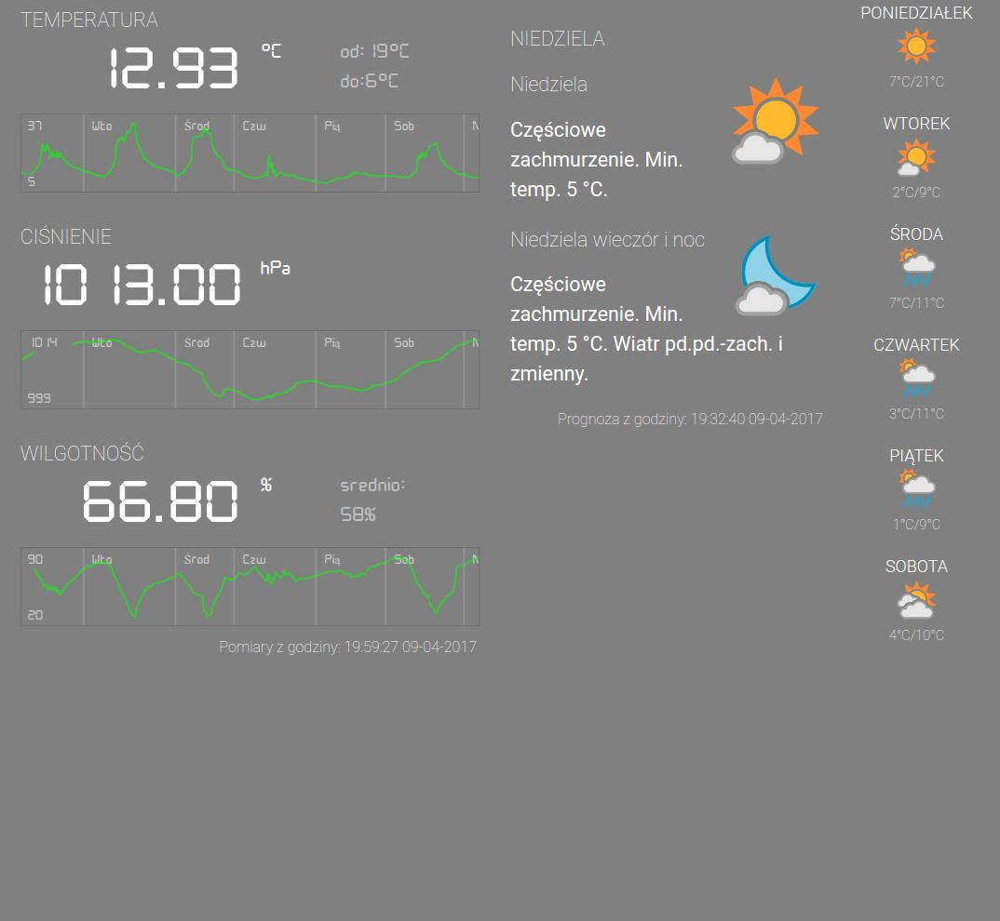
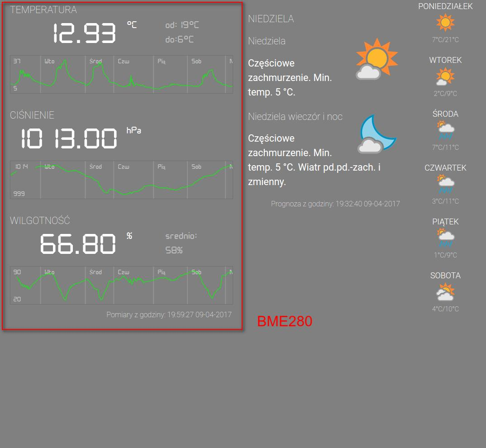
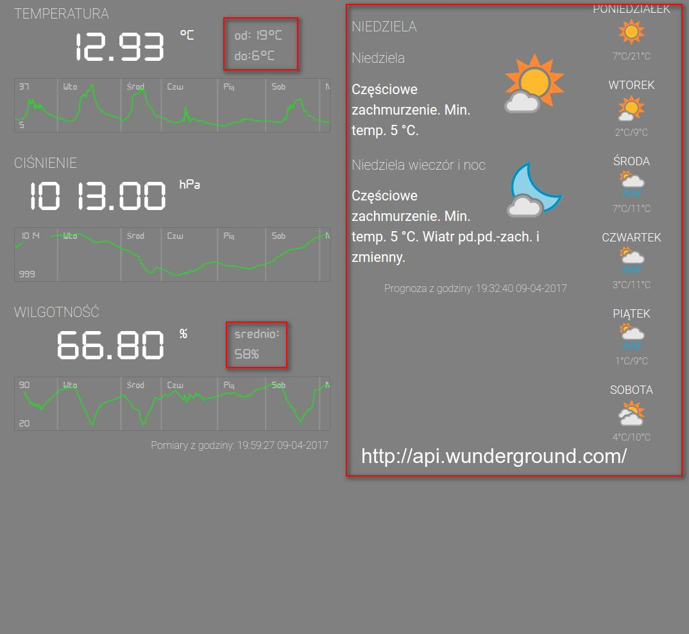
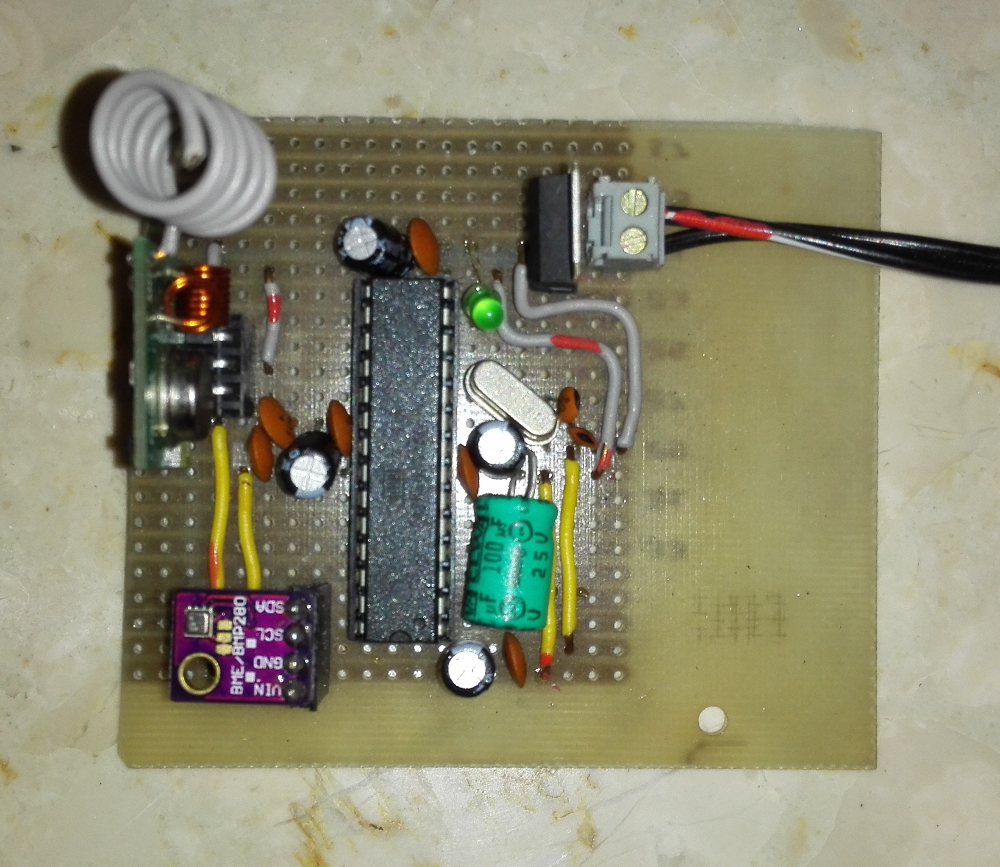

Weather Station Project
Created by Dariusz Biedrzycki / kontakt@3wm.pl / Mobiem.pl
Screen z laptopa
BME280
wunderground.com
Sensor 11 - nadajnik
Sensor 12 + odbiornik

Sensor11 nadajnik
1. co 10 sek (timer0):
2. Pomiar ciśnienia, temeratury, wilgotności przez BME280
3. Zamiana na string
4. Wysłanie przez RF433
Sensor12 + odbiornik
1. odebranie danych z sensora11
2. wysłanie danych przez UART na laptop
3. Pomiar temepratury przez DS18B20
4. Wysłanie przez UART na laptop
Laptop
1. odebranie danych przez uart i wysłanie skryptu php na serwerze
Server php
1. odebranie danych
2. zapis danych do bazy danych Redis
3. przesłanie danych do firebase
4. co 90 pomiarów wyliczenie średniej
5. wysłanie danych do wykresu do firebase
6. zapisanie wszystkiego w mysql oraz usunięcie z Redisa
Etapy pracy
1. Arduino NANO

2. atmega328 + breadbord + kod w C

3. zlutowana wersja na płytce prototypowej + kod w c

Arduino minusy
2kb na początek
Duża nadmiarowość kodu, znacznie mniejsza szybkość
digitalWrite() - 6,005ms
portRegister - 0,440ms
https://www.peterbeard.co/blog/post/why-is-arduino-digitalwrite-so-slow/
Biblioteki zwenętrzne
kolizja timerów, przerwań
uniwersalne = duża nadmiarowość kodu
Co dalej?
Request do servwera przez GPRS
nRF24L01 zamiast RF433
Architektura client-server
Dziękuję
Dariusz Biedrzycki
kontakt@3wm.pl
Mobiem.pl